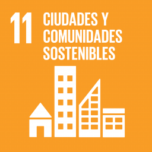
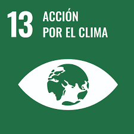

Clasificar residuos es más que reciclar
Cada objeto bien separado es un paso hacia un planeta más limpio y sostenible. Con EcoScan AI, todos podemos tomar mejores decisiones.
Este proyecto aporta a los Objetivos de Desarrollo Sostenible:

ODS 11

ODS 12

ODS 13